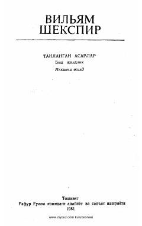

QLUilyam Shekspirning mashhur 'Qirol Lir' tragediyasi.
Ushbu asar buyuk dramaturg Uilyam Shekspirning jahonga mashhur 'Qirol Lir' tragediyasining o'zbek tilidagi tarjimasidir. Kitobda qirol Lirning o'z taqdiri va qizlari munosabati tufayli boshiga tushgan og'ir sinovlari, adolat va xiyonat mavzulari ochib berilgan.